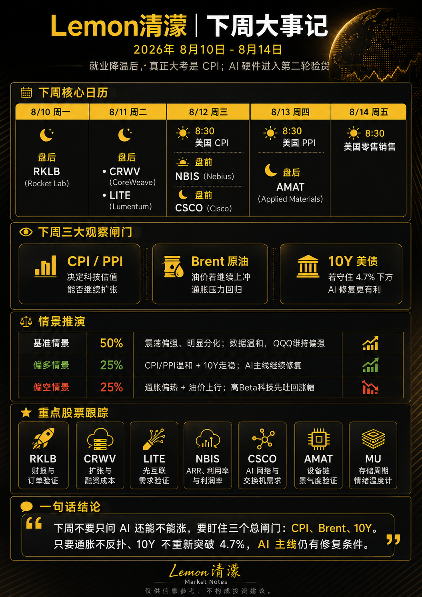

大家好啊，又是我清濛出来骗神骗鬼了，哈哈，开始预测下周的行情了。
到今晚周日晚为止，美股期货基本平开：标普500期货约跌 0.1%、道指约跌 0.2%，纳指100接近平盘；但真正需要警惕的是油价，布伦特重新回到 84 美元上方。
上周7月非农意外减少 2.3 万人，把9月加息概率压到约 44%，10年期美债也回落至 4.64%。所以现在市场逻辑很简单：就业给了科技股喘息，但油价和通胀随时可能把估值顺风收回。
下周剧本
| 情景 | 概率 | 判断条件 |
|---|---|---|
| 基准情景 | 50% | 震荡偏强、明显分化。若周三 CPI 接近或低于预期，10Y 继续守住 4.7% 下方，QQQ 还有修复空间。 |
| 偏多情景 | 25% | CPI/PPI 温和、10Y 走稳，AI 主线继续修复。 |
| 偏空情景 | 25% | CPI、PPI 同时偏热，布油重新冲向 86—88 美元，高 Beta 科技最先吐回上周涨幅。 |
根据我模型得到的数据，目前预期7月 CPI 同比约 3.4%、核心约 2.5%。的确很难捉摸，没有办法，warsh 不愿意给提示，我只能自己去猜、去分析。
重点股票跟踪
| 股票 | 时间 | 我会看什么 |
|---|---|---|
| RKLB | 8/10 盘后 | 最新 82.83 美元，8月6日刚公布 3.97 亿美元美国太空军合同，基本面有催化，但最怕财报后“利好兑现”。 |
| CRWV | 8/11 盘后 | 最新 90.67 美元，考题不是 AI 需求强不强，而是高速扩张能否覆盖资本开支、融资与利息成本。 |
| LITE | 8/11 财报 | 目前 890.17 美元，在高估值状态下必须继续证明光互联和 AI 数据中心需求没有降速。 |
| NBIS | 8/12 盘前 | 最新 187.97 美元，重点看 ARR、算力利用率、数据中心扩张和利润率，而不只是营收增长。 |
| CSCO | 8/12 盘后 | AI 交换机和网络需求能否继续扩散的重要验证。 |
| AMAT | 8/13 盘后 | 最新 539.14 美元；如果 DRAM、HBM 和先进封装相关设备需求继续强，说明 AI 资本开支没有缩，而是在继续往设备链传导。 |
| MU | 持续观察 | 最新约 877.57 美元，依然是存储周期的情绪温度计；AMAT 指引以及中国存储供应竞争都会影响市场对 2027 年供需的判断。 |
下周大事记

| 日期 | 事件 | 总闸门 |
|---|---|---|
| 8/10 | RKLB 盘后财报。 | 太空军合同之后，验证订单和收入兑现。 |
| 8/11 | CRWV、LITE 财报。 | 看 AI 算力扩张成本和光互联需求是否继续强。 |
| 8/12 | 8:30 CPI；NBIS 盘前、CSCO 盘后。 | CPI 决定科技估值能否继续扩张，NBIS 和 CSCO 验证 AI 网络与算力需求。 |
| 8/13 | 8:30 PPI；AMAT 盘后。 | 通胀二次确认，AMAT 验证 AI 设备链景气度。 |
| 8/14 | 8:30 美国零售销售。 | 看消费数据是否重新推高利率和通胀担忧。 |
一句话结论
下周不要只问 AI 还能不能涨，要盯三个总闸门：CPI、Brent、10Y。只要通胀不反扑、10Y 不重新突破 4.7%，AI 主线仍有继续修复的条件；一旦出现“油价涨＋收益率涨”，先降高 Beta，比猜哪只股票最强更重要。
当然啊，我也会继续随时看着大盘和数据的走向，特别是下周 CPI、油价和这些财报。
P.S. 可能是我比较保守，喜欢得出数据后，然后分析再出结论。因为我不想太冒险和去赌任何东西。
本文仅用于个人市场观察与学习记录，不构成任何投资建议。市场有风险，交易需独立判断。